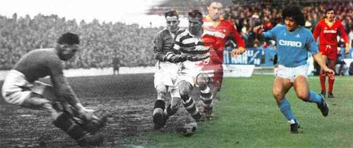

Neymar Jr
Neymar da Silva Santos Júnior, known as Neymar, is a Brazilian professional footballer who plays as a forward.

Lionel Messi
Lionel Messi is a soccer player with FC Barcelona and the Argentina national team. He has established records for goals scored and won individual awards en route to worldwide recognition as one of the best players in soccer

Cristiano Ronaldo
Cristiano Ronaldo, in full Cristiano Ronaldo dos Santos Aveiro, (born February 5, 1985, Funchal, Madeira, Portugal), Portuguese football (soccer) forward who was one of the greatest players of his generation. ... Originally a right-winger, he developed into a forward with a free-reined attacking style.

Paulo Dybala
Paulo Exequiel Dybala (born 15 November 1993) is an Argentine professional footballer who plays as a forward for Serie A club Juventus and the Argentina national team. ... He also ranks as Juventus' fourteenth-highest all-time top goalscorer.

Mesul Ozil
Mesut Özil (German pronunciation: [ˈmeːzut ˈøːzil], Turkish: [meˈsut œˈzil]; born 15 October 1988) is a German professional footballer who plays as an attacking midfielder for Süper Lig club Fenerbahçe.

Mauro Icardi
Mauro Emanuel Icardi (Spanish pronunciation: [ˈmawɾo emaˈnwel iˈkaɾði]; born 19 February 1993) is an Argentine professional footballer who plays as a striker for Ligue 1 club Paris Saint-Germain and the Argentina national team.

Di Maria
Angel di Maria is an Argentine professional footballer who plays for Ligue 1 club Paris Saint-Germain and the Argentina national team.

Kylian Mbappé
Kylian Mbappé Lottin (born 20 December 1998) is a French professional footballer who plays as a forward for Ligue 1 club Paris Saint-Germain and the France national team.

Mohamed Salah
Mohamed Salah Hamed Mahrous Ghaly (Egyptian Arabic:born 15 June 1992) is an Egyptian professional footballer.

Harry Kane
Harry Edward Kane MBE (born 28 July 1993) is an English professional footballer who plays as a striker for Premier League club Tottenham Hotspur and captains the England national team.

Kevin De Bruyne
Kevin De Bruyne (born 28 June 1991) is a Belgian professional footballer who plays as a midfielder for Premier League club Manchester Cit

Philippe Coutinho
Philippe Coutinho Correia (born 12 June 1992) is a Brazilian professional footballer who plays as an attacking midfielder or winger for La Liga club .
Football History
Football (or soccer as the game is called in some parts of the world) has a long history.
Football in its current form arose in England in the middle of the 19th century.
But alternative
versions of the game existed much earlier and are a part of the football history
